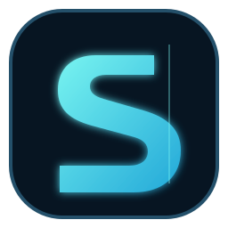

⌁
Varlık envanteri
Alan adlarını hesabına kaydet ve sahipliğini doğrula.

SENTRIXAlan adı envanteri, sahiplik doğrulama ve ölçülebilir web analitiği tek bir güvenli çalışma alanında.
Alan adlarını hesabına kaydet ve sahipliğini doğrula.
Doğrulanmış alan adlarından sayfa görüntüleme ve oturum verileri.
Yetkilendirilmiş kaynaklar ve sunucu tarafı olay alımı için altyapı.
SENTRIX yalnızca sahip olduğun veya açıkça yönetme iznin bulunan varlıklar içindir. Doğrulama olmadan izleme başlatılmaz; eksik entegrasyonlar gerçek veri gibi gösterilmez.